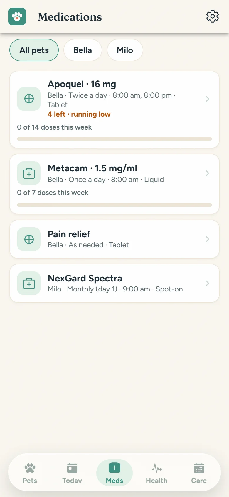
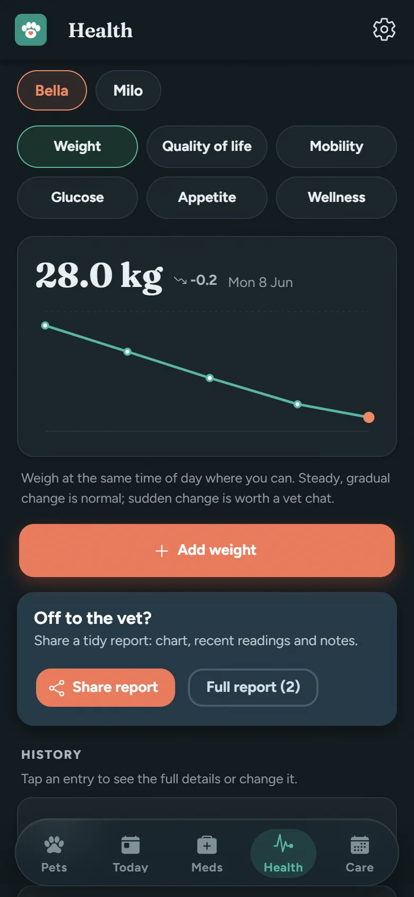
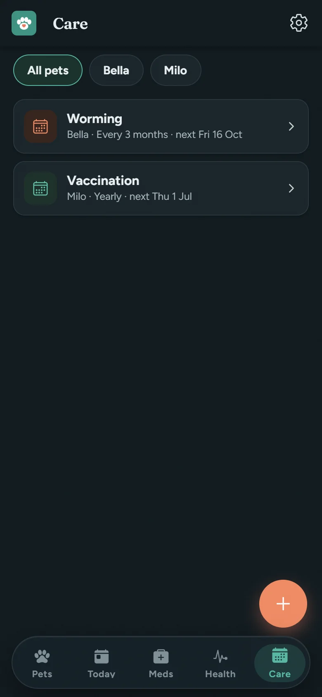
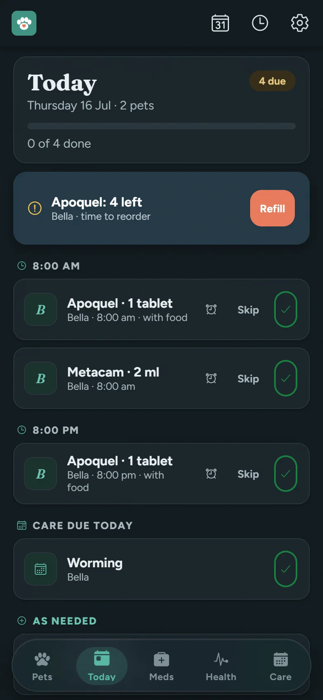

TreatMyPet2
In development · coming 2026 · Android first, iPhone to followThe calm way to manage your pet's medications, care and health. Built for dogs and cats, and for the humans who never want to miss a dose again.
Designed by a veterinarian, for up to five pets — everything lives on your phone: flexible dose schedules (daily, every few hours, courses, or as-needed), refill alerts before the packet runs out, vaccination and worming reminders, weight and wellness tracking, a seizure diary, vet visit notes and tidy reports you can share with your clinic. One tap calls your vet. No account needed, and it all works with no signal at all.
Household sharing is on the way too — strictly opt-in, so the whole family can see the same doses and nobody double-medicates the dog.
Want to beta test? Email us and help decide what gets built next.

A look inside
Five screens, zero clutter.
Real screenshots from the app as it's being built. And yes, there's a proper dark mode for the night owls.




What it does
Everything pet care, in one pocket.
Today view
Every dose and care task due today, across all your pets, on one calm screen.
Medication schedules
Flexible dose times, with-food notes, refill warnings and a full dosing history.
Care reminders
Vaccinations, worming, flea & tick and grooming: gentle nudges before they're due.
Health tracking
Weight, glucose, appetite, mobility and quality-of-life check-ins, charted over time.
Seizure diary
Log episodes quickly in the moment, spot patterns later, share details with your vet.
Vet visits & reports
Appointment history, notes, insurance details and a tidy report to share at the clinic.
First-aid guides
Clear, offline first-aid references for common emergencies, handy even with no signal.
Offline & backups
Works with zero internet. Back up to a file you control, restore on any new phone.
Your pet's data stays with you.
TreatMyPet2 keeps everything on your device. No account needed, no analytics following you around. Health records are sensitive, even the furry kind. When household sharing arrives it will be strictly opt-in — your pets' records sync only with the people you invite, and never to us.
Support
Need a hand with TreatMyPet?
Questions, bug reports and feature ideas all land in the same friendly inbox. Include your device model if something's misbehaving. It helps a lot.
support@warrimoo.netTreatMyPet2 is an organisational tool and is not a substitute for advice from your own vet. Always consult a qualified veterinarian about your pet's health. Terms of use